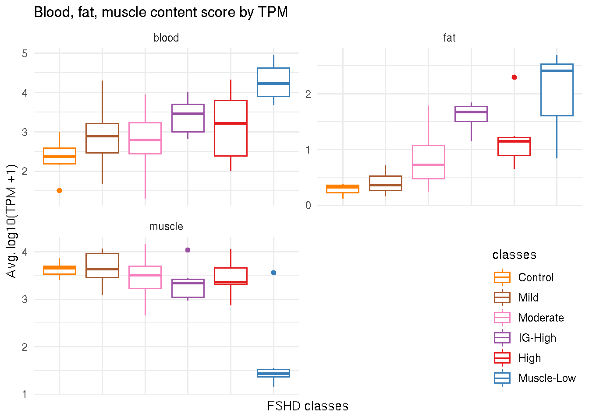

Chapter 9 Biopsy Quality Control
Blood, fat, muscle markers and scored by \(\log_{10}(TPM + 1)\).
9.1 Blood, fat and muscle cell markers
markers <- tibble(cell_type=c(rep("blood", 3), rep("fat", 3), rep("muscle", 3)),
gene_name=c("HBA1", "HBA2", "HBB",
"FASN", "LEP", "SCD",
"ACTA1", "TNNT3", "MYH1")) %>%
dplyr::mutate(gencode_id = get_ensembl(gene_name, rse=sanitized.dds)) %>%
dplyr::mutate(cell_type = factor(cell_type))## HBA1 HBA2 HBB FASN LEP SCD ACTA1 TNNT3 MYH1knitr::kable(markers)| cell_type | gene_name | gencode_id |
|---|---|---|
| blood | HBA1 | ENSG00000206172.8 |
| blood | HBA2 | ENSG00000188536.12 |
| blood | HBB | ENSG00000244734.3 |
| fat | FASN | ENSG00000169710.7 |
| fat | LEP | ENSG00000174697.4 |
| fat | SCD | ENSG00000099194.5 |
| muscle | ACTA1 | ENSG00000143632.14 |
| muscle | TNNT3 | ENSG00000130595.16 |
| muscle | MYH1 | ENSG00000109061.9 |
9.2 Define score
For each cell type, the marker score for each sample is \(\frac{1}{n}\Sigma_{i=1}^{n}\log_{10}(TPM_i + 1)\), where \(i\) denotes genes and \(n\) is the number of genes of the cell type.
lv <- levels(markers$cell_type)
celltype_tpm <- sapply(lv, function(type) {
id <- markers %>% dplyr::filter(cell_type == type) %>%
pull(gencode_id)
sub <- sanitized.dds[id]
tpm_score <- colMeans(log10(assays(sub)[["TPM"]]+1))
})
celltype_tpm <- as.data.frame(celltype_tpm) %>%
rownames_to_column(var="sample_name") %>%
add_column(pheno_type = sanitized.dds$pheno_type,
classes = sanitized.dds$new_cluster_name,
classes_color = sanitized.dds$cluster_color) 9.3 Visualization
The blood, fat and muscle content scores are given to each sample. Boxplot below illustrates that the FSHD biopsies categorized in the Muscle-Low class are fatter and “blooder” and have less muscle content than the rest of the biopsies.
tmp <- celltype_tpm %>% gather(key=cell_type, value=score, -sample_name,
-pheno_type, -classes, -classes_color) %>%
dplyr::mutate(cell_type = factor(cell_type))
color_manual <- celltype_tpm %>% group_by(classes) %>%
summarise(color=unique(classes_color))
ggplot(tmp, aes(x=classes, y=score, color=classes)) +
geom_boxplot() +
facet_wrap(~ cell_type, scale="free", nrow=2) +
theme_minimal() +
theme(axis.text.x=element_blank(), legend.justification=c(1,0), legend.position=c(1,0)) +
scale_color_manual(values=color_manual$color) +
labs(y="Avg. log10(TPM +1)", x="FSHD classes",
title="Blood, fat, muscle content score by TPM")
9.4 Determine “outliers”
use permutation test? calculate the p-value by constructing mean distribution?
9.5 Determin “bad” biopsies?
9.6 Tables
tb <- dplyr::select(celltype_tpm, -classes_color) %>%
arrange(classes)
knitr::kable(tb, caption="Blood, fat and muscle content index.")| sample_name | blood | fat | muscle | pheno_type | classes |
|---|---|---|---|---|---|
| 01-0041 | 2.585593 | 0.1184236 | 3.862732 | Control | Control |
| 01-0042 | 2.604758 | 0.3822024 | 3.404674 | Control | Control |
| 01-0043 | 1.515110 | 0.2021819 | 3.643485 | Control | Control |
| 01-0044 | 2.256298 | 0.2361598 | 3.655246 | Control | Control |
| 01-0045 | 2.485550 | 0.3499366 | 3.707235 | Control | Control |
| 01-0046 | 3.001476 | 0.2935164 | 3.427649 | Control | Control |
| 01-0048 | 2.154881 | 0.3454669 | 3.692780 | Control | Control |
| 01-0049 | 2.199308 | 0.3796754 | 3.562354 | Control | Control |
| 01-0023 | 1.668277 | 0.5237397 | 3.177025 | FSHD | Mild |
| 01-0032 | 3.282519 | 0.5813589 | 3.790697 | FSHD | Mild |
| 01-0033 | 2.471344 | 0.2054422 | 3.418840 | FSHD | Mild |
| 01-0034 | 2.912924 | 0.2439875 | 3.968929 | FSHD | Mild |
| 01-0036 | 2.292336 | 0.3440663 | 3.634696 | FSHD | Mild |
| 32-0011 | 3.213565 | 0.2619783 | 3.981536 | FSHD | Mild |
| 32-0012 | 3.013254 | 0.6171513 | 3.480103 | FSHD | Mild |
| 32-0014 | 4.299332 | 0.1537942 | 3.158579 | FSHD | Mild |
| 32-0015 | 2.891994 | 0.3012466 | 4.061947 | FSHD | Mild |
| 32-0018 | 3.617742 | 0.1898964 | 3.597990 | FSHD | Mild |
| 32-0019 | 2.280754 | 0.3573577 | 3.984106 | FSHD | Mild |
| 01-0023b | 2.273485 | 0.7225922 | 3.462251 | FSHD | Mild |
| 01-0026b | 3.076727 | 0.3619324 | 3.636448 | FSHD | Mild |
| 01-0036b | 2.757293 | 0.3583505 | 3.653238 | FSHD | Mild |
| 32-0013b | 2.824210 | 0.6457411 | 3.511864 | FSHD | Mild |
| 32-0015b | 2.741116 | 0.3704249 | 4.023872 | FSHD | Mild |
| 32-0017b | 3.553026 | 0.3916796 | 3.089687 | FSHD | Mild |
| 01-0021 | 2.883033 | 0.4052833 | 3.240677 | FSHD | Moderate |
| 01-0022-1 | 2.603183 | 1.5294705 | 3.530700 | FSHD | Moderate |
| 01-0024 | 3.011862 | 0.4650832 | 3.470005 | FSHD | Moderate |
| 01-0026 | 2.393720 | 0.4211012 | 3.681180 | FSHD | Moderate |
| 01-0030 | 3.123735 | 1.2808079 | 3.732009 | FSHD | Moderate |
| 01-0035 | 2.397119 | 0.9189982 | 3.448796 | FSHD | Moderate |
| 01-0038 | 2.478129 | 0.3810781 | 3.103982 | FSHD | Moderate |
| 32-0002 | 2.912887 | 0.5254690 | 3.199493 | FSHD | Moderate |
| 32-0007 | 2.481612 | 0.9001335 | 3.186218 | FSHD | Moderate |
| 32-0008 | 3.944364 | 1.7901614 | 2.653674 | FSHD | Moderate |
| 32-0010 | 3.251255 | 0.2792022 | 4.161168 | FSHD | Moderate |
| 32-0013 | 3.600465 | 0.9677029 | 3.692289 | FSHD | Moderate |
| 01-0022b | 3.330682 | 1.7365568 | 3.796104 | FSHD | Moderate |
| 01-0024b | 3.183899 | 0.2378188 | 3.327007 | FSHD | Moderate |
| 01-0028b | 2.163574 | 0.5596671 | 3.756815 | FSHD | Moderate |
| 01-0030b | 2.371968 | 0.6290769 | 3.702877 | FSHD | Moderate |
| 01-0033b | 1.301926 | 0.5558120 | 3.672376 | FSHD | Moderate |
| 01-0034b | 2.695132 | 0.5194755 | 4.035298 | FSHD | Moderate |
| 01-0035b | 2.638491 | 1.0832977 | 3.332846 | FSHD | Moderate |
| 32-0006b | 3.557061 | 1.0401034 | 3.582340 | FSHD | Moderate |
| 32-0009b | 2.429373 | 1.5374834 | 3.066060 | FSHD | Moderate |
| 32-0014b | 3.373019 | 0.8191356 | 3.226881 | FSHD | Moderate |
| 01-0027 | 2.861061 | 1.4552309 | 3.341357 | FSHD | IG-High |
| 32-0017 | 3.645956 | 1.6709002 | 3.011805 | FSHD | IG-High |
| 01-0025b | 3.760612 | 1.5639605 | 4.035969 | FSHD | IG-High |
| 01-0027b | 3.458966 | 1.8465812 | 3.437264 | FSHD | IG-High |
| 01-0029b | 4.002951 | 1.8184439 | 3.068390 | FSHD | IG-High |
| 32-0007b | 2.808018 | 1.7246814 | 3.398351 | FSHD | IG-High |
| 32-0018b | 3.137937 | 1.1417576 | 2.966068 | FSHD | IG-High |
| 01-0025 | 2.279839 | 0.6538198 | 3.906637 | FSHD | High |
| 01-0029 | 3.213923 | 1.1415584 | 3.201525 | FSHD | High |
| 32-0003 | 2.920859 | 1.1202031 | 3.604562 | FSHD | High |
| 32-0004 | 2.000568 | 1.2400798 | 3.354000 | FSHD | High |
| 32-0005 | 4.325426 | 1.2125240 | 3.661033 | FSHD | High |
| 32-0006 | 2.389504 | 1.1906286 | 3.322845 | FSHD | High |
| 32-0009 | 3.518911 | 2.3004965 | 2.868475 | FSHD | High |
| 32-0002b1 | 3.798370 | 0.6701894 | 3.311355 | FSHD | High |
| 32-0005b | 4.165111 | 0.8942373 | 4.057378 | FSHD | High |
| 01-0037 | 3.820057 | 2.5362662 | 1.146418 | FSHD | Muscle-Low |
| 32-0016 | 4.296978 | 2.5212618 | 1.444503 | FSHD | Muscle-Low |
| 01-0037b | 3.680353 | 1.3811564 | 3.556671 | FSHD | Muscle-Low |
| 32-0010b | 4.148983 | 2.2940258 | 1.548513 | FSHD | Muscle-Low |
| 32-0012b | 4.738981 | 2.6884333 | 1.356221 | FSHD | Muscle-Low |
| 32-0016b | 4.944297 | 0.8406186 | 1.415840 | FSHD | Muscle-Low |
#' blood, fat and muscle mean score for each class
tb2 <- tb %>%
group_by(classes) %>%
summarise(blood_mean = mean(blood),
fat_mean = mean(fat),
muscle_mean = mean(muscle))
knitr::kable(tb2)| classes | blood_mean | fat_mean | muscle_mean |
|---|---|---|---|
| Control | 2.350372 | 0.2884454 | 3.619519 |
| Mild | 2.892347 | 0.3900435 | 3.625400 |
| Moderate | 2.823931 | 0.8446781 | 3.481763 |
| IG-High | 3.382214 | 1.6030794 | 3.322743 |
| High | 3.179168 | 1.1581930 | 3.476423 |
| Muscle-Low | 4.271608 | 2.0436270 | 1.744694 |